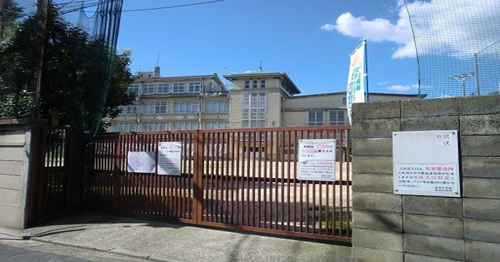

第2ページ／全3ページ
あの日、一緒に野球部へ入った
弥栄中学校の青春、厳しい練習、忘れられない友情
第1章｜中学校に入ったあの春
寺田、今でもあの日のことを鮮明に覚えているよ。中学校へ入学した頃、「一緒に野球部へ入ろう」と声をかけてくれたのはお前だったな。しかも入部の日には、わざわざ私の家まで迎えに来てくれた。二人で出かけた、あの何げない出来事が、今はかけがえのない思い出になっています。
第2章｜足が痛くて歩きにくかった帰り道
練習が終わり、二人で帰途についたときのこと。足に身が入り、歩くのもつらかったな。まだ入部したばかりの私たちには、慣れない練習が相当にこたえたのでしょう。けれど、お前と一緒だったからこそ、その帰り道まで覚えているのだと思う。しんどかったことさえ、今では懐かしい。
第3章｜今なら許されない、先輩からの体罰
当時、1年生全員が並ばされ、先輩からバットで太ももをたたかれたこともありました。今であれば問題になる行為であり、決して正当化できるものではありません。けれども、あの頃の厳しい部活動の空気も、私たちが実際に経験した青春の一場面でした。野球の練習やお前と励まし合った日々から学んだことは、今も私の中に残っています。
第4章｜弥栄中学校の思い出
写真は、京都市立弥栄中学校の校門と校舎です。この写真を見ると、中学生だった私たちの足音がよみがえります。野球部に誘ってくれた寺田、迎えに来てくれた寺田。目を閉じれば、あの頃の姿が浮かんでくるようです。

第5章｜歌が好きで明るかった寺田
寺田は歌うことが大好きでした。中学生の頃にはやんちゃな一面もあったけれど、根は明るい男だった。誰にでも同じように理解されたとは限らない。それでも、私は長年の付き合いの中で、その個性を受け止めてきたつもりです。
第6章｜苦労も思い出になる
一緒に野球部へ入った日、厳しい練習、痛む足で歩いた帰り道。決して楽しいことばかりではなかった。それでも、今振り返れば、私にとっては大切な体験だったと思っています。
「寺田、あのとき一緒に入部してくれてありがとう。」
お前と過ごした青春の日々を、私は忘れません。